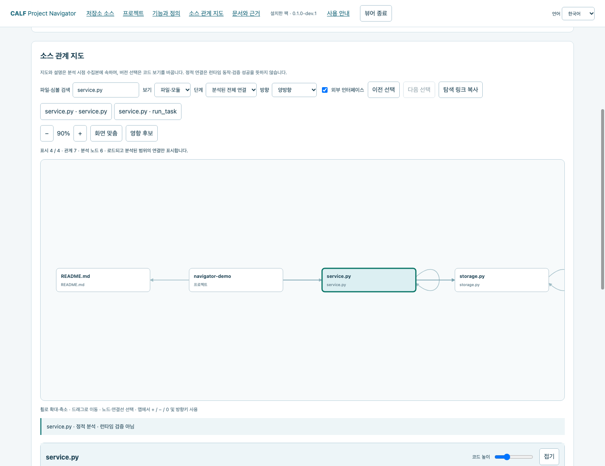
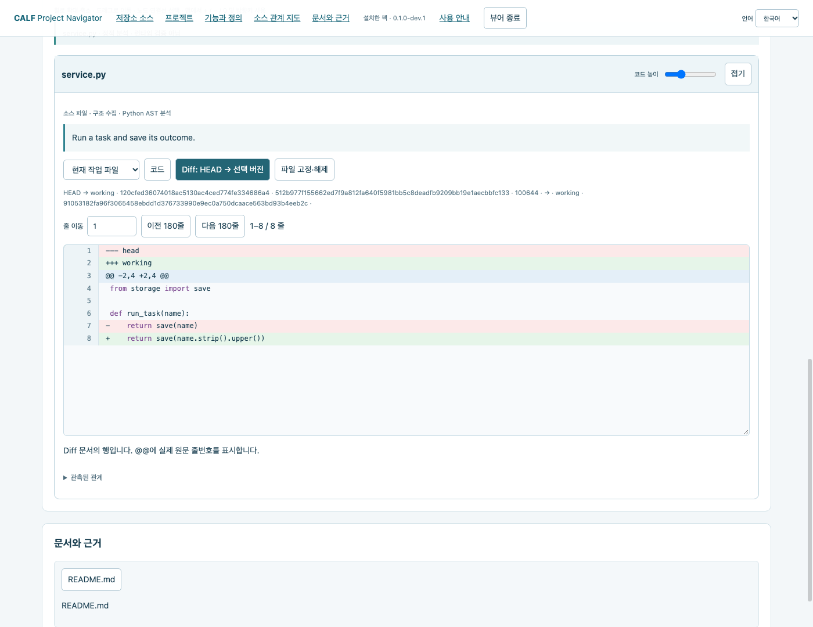
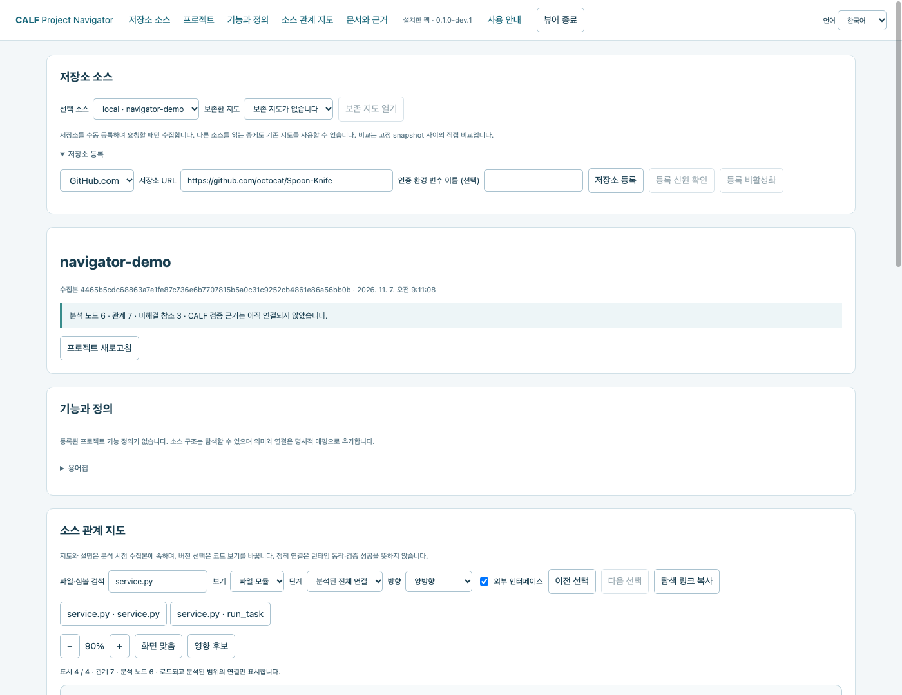
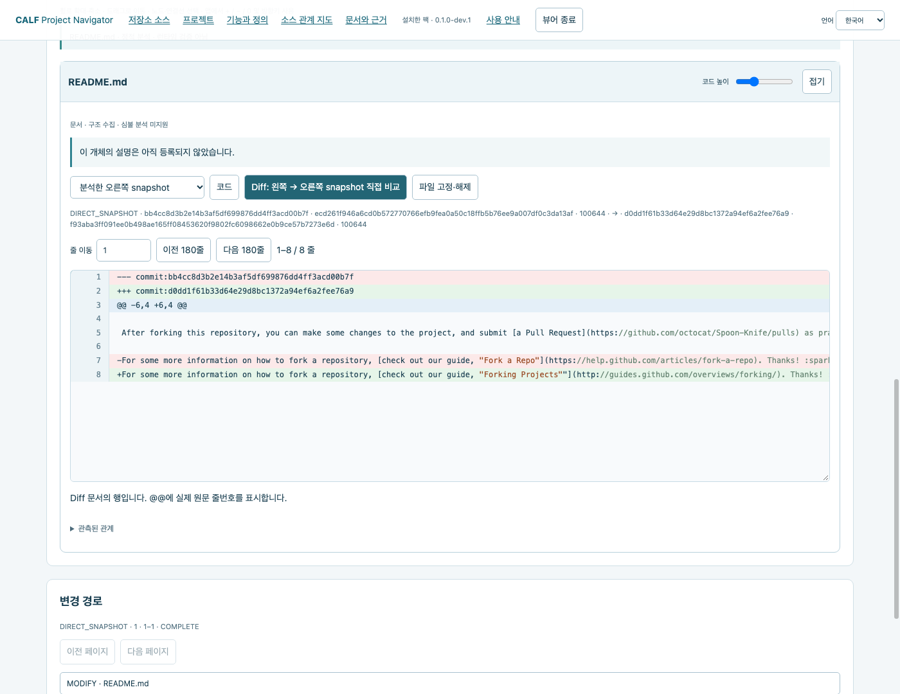
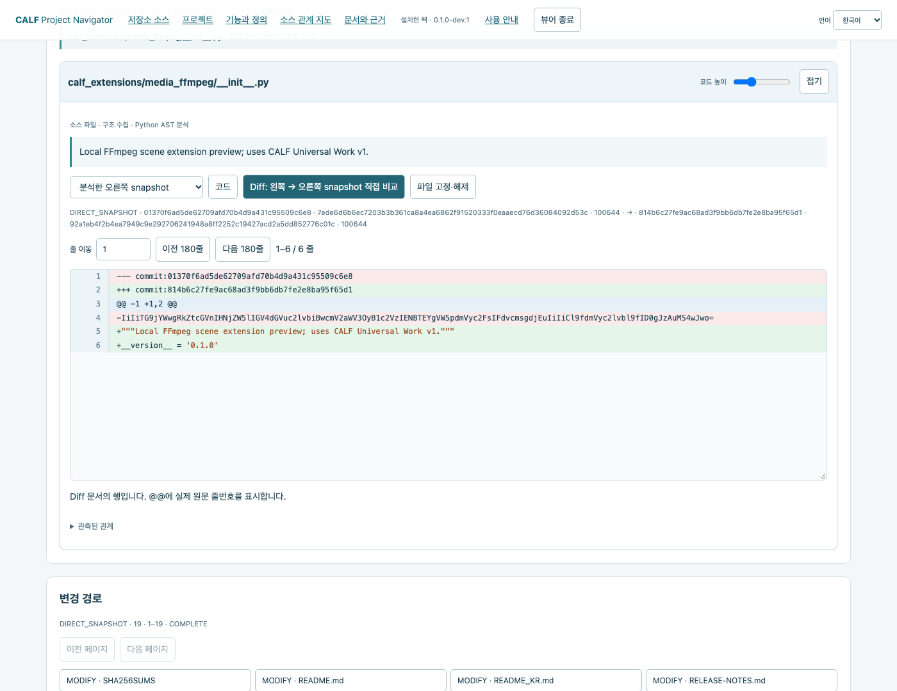
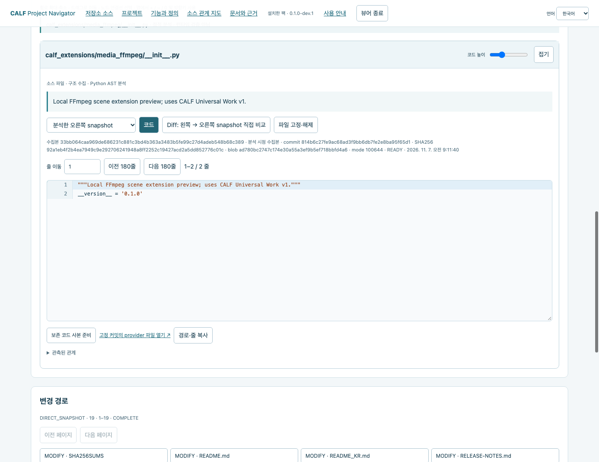

설치하고 시작하기
Local Git·GitHub.com·GitLab.com 저장소를 같은 관계 지도와 지도 아래의 설명·코드·Diff 화면으로 탐색하는 무료 확장팩입니다.
- Python 3.10 이상, Git 2.43 이상과 최신 브라우저를 준비합니다. CALF core·SDK·모델은 필요하지 않습니다.
- 신뢰할 수 있는 배포본을 받아 새 폴더에 풀고 공개된 SHA256과 동봉 라이선스를 확인합니다.
- 압축을 푼 폴더에서 터미널을 열고 아래 명령을 실행합니다. Windows에서는 python3 대신 python을 사용합니다.
python3 START_NAVIGATOR.py install --home ../navigator-store --data-dir ../navigator-data --preview python3 START_NAVIGATOR.py open --home ../navigator-store
설치 과정에서 네트워크 없이 예제 검사를 실행하고 사용할 Python·Git의 버전과 파일 해시를 기록합니다. 브라우저가 자동으로 열립니다. 터미널을 유지하고 마칠 때 뷰어 종료를 누르세요.
STORE·DATA·탐색할 저장소를 분리하세요. 계정 자동 검색·전역 도구 설치·상주 서비스는 추가하지 않습니다.
필요하면 설치 시 --python 절대경로 --git 절대경로를 지정하세요. open에 --no-browser를 추가하면 출력된 로컬 URL을 직접 열 수 있습니다.
Local Git 연결과 관계 지도
- 기존 작업 트리 하나를 명시적으로 선택합니다. 예제 경로를 실제 프로젝트 경로로 바꾸세요.
- 파일·심볼을 검색하고 노드를 선택해 연결을 따라갑니다. 파일·모듈 또는 심볼 보기, 연결 방향(들어옴·나감·양방향), 탐색 깊이(1·2·3단계·분석된 전체)를 선택합니다.
- 휠로 확대·축소하고 빈 곳을 드래그해 이동합니다. + / - / 화면 맞춤과 이전·다음 선택을 사용하세요. 영향 후보는 정적 연결을 거슬러 올라가 변경의 영향을 받을 수 있는 코드를 보여 줍니다.
python3 START_NAVIGATOR.py open --home ../navigator-store --repo /path/to/project

분석된 범위에서 최대 500개 노드를 표시합니다. 정적 연결·영향 후보가 실행 동작을 증명하지는 않습니다.
Python 심볼·호출을 분석합니다. 다른 언어는 파일·문서 구조와 분석 한계를 표시합니다.
코드와 버전 차이 읽기
- 노드를 선택하고 지도 아래 상세 패널에서 설명·코드·버전 정보를 확인합니다.
- Local Git은 분석 시점·HEAD·스테이징·작업 파일을 구분합니다. Diff는 HEAD와 선택 버전을 비교하며 충돌 stage 1·2·3도 별도로 봅니다.
- 줄 이동·코드 높이·접기·고정을 사용할 수 있습니다. 긴 코드는 가로로 스크롤합니다. 언어 전환은 화면 문구에 적용되며 코드·주석·사용자 정의는 원문을 유지합니다.

탐색기는 소스를 커밋·체크아웃·수정하지 않습니다. Local Git 에디터 링크는 선택한 경로를 엽니다. 에디터에서 작업 파일을 편집하면 프로젝트가 바뀌므로 먼저 경로와 버전을 확인하세요.
GitHub 저장소 등록
- 저장소 등록을 펼치고 GitHub.com과 저장소 URL을 입력합니다. 공개 예제는 https://github.com/octocat/Spoon-Knife 입니다.
- 공개 저장소에 익명으로 접근하려면 인증 참조를 비워 둡니다. 저장소 등록 후 등록 신원 확인을 누르세요. 등록만으로 수집하지는 않습니다.
- branch·tag·전체 commit 중 종류와 정확한 이름을 지정합니다. 예제는 branch + main입니다. 왼쪽 비교 대상을 지정하거나 첫 부모·빈 시작 상태를 유지한 뒤 수집·분석을 누르세요.

익명 API 한도가 적용됩니다. 한도·시간 초과·객체 누락은 부분 수집으로 남으며 완전한 범위를 뜻하지 않습니다. 수집 취소 시 현재 지도를 보존합니다.
고정된 원격 코드와 Diff 탐색
- 수집이 끝나면 지도·검색 결과·변경 경로에서 파일을 선택합니다.
- 원격 버전은 분석한 오른쪽·비교 왼쪽·비교 오른쪽으로 구분합니다. Diff는 고정한 두 스냅샷을 직접 비교합니다. 작업 트리나 공통 조상(merge base)을 기준으로 한 비교와는 다릅니다.
- 커밋 ID·blob ID·SHA-256을 확인하세요. 고정 원문 열기는 해당 commit의 파일로 연결됩니다. 원격 브랜치·파일을 수정하지 않습니다.

파일 부재·빈 파일·확보하지 못한 원문은 서로 다릅니다. 보존 바이트 누락을 빈 파일로 표시하지 않습니다.
GitLab도 같은 흐름으로 사용
- 저장소 등록에서 GitLab.com을 선택합니다. 공개 예제: https://gitlab.com/vibepackr-group/CALF-Extensions
- 저장소를 등록하고 프로젝트 정보를 확인한 뒤 branch + main으로 수집·분석합니다. 하위 그룹이 있는 프로젝트 경로도 지원합니다.
- 지도·코드·직접 Diff·변경 경로·보존 지도는 같은 컨트롤을 사용하며 선택한 ref가 가리키는 GitLab 커밋을 기준으로 표시합니다.

이번 프리뷰 대상은 GitHub.com·GitLab.com입니다. 자체 호스팅 서버·비공개 계정 흐름은 이 공개 예제로 검증한 범위에 포함되지 않습니다.
보존 지도·기능 정의·에디터 사본
- 소스와 보존 지도를 선택해 보존 지도 열기를 누릅니다. 보존 지도를 열 때는 저장된 원문을 사용하며, 변경된 브랜치를 다시 수집하지 않습니다. 부분 결과는 명시적으로 선택해야 합니다.
- 원격 코드는 코드 → 보존 코드 사본 준비를 선택합니다. 에디터 링크는 캐시 원본·원격 파일이 아닌 별도 사본을 가리킵니다. 실행하려면 로컬 VS Code URL 연결이 필요합니다.
- UTF-8 --project-map 설정파일로 기능 정의·용어·코드 대상·문서 참조를 명시적으로 연결합니다. JSON 형식은 동봉 저장소 안내를 참고하세요. 누락 대상은 미해결로 유지합니다.

탐색 링크 복사는 해당 수집본의 탐색 상태를 보존합니다. 이전·다음과 파일 고정으로 연결된 코드를 비교할 수 있으며 소스 언어는 원문을 유지합니다.
오프라인 내보내기와 인증 참조
뷰어를 먼저 종료하고 출력 결과의 BINDING을 복사합니다. 소스 목록에서 SOURCE_ID를 확인하고 원하는 ref를 수집한 뒤, 결과의 CONTEXT_ID를 사용해 내보냅니다. 대문자 자리표시자를 실제 값으로 바꾸세요.
python3 START_NAVIGATOR.py run --binding BINDING -- sources list python3 START_NAVIGATOR.py run --binding BINDING -- scan --source SOURCE_ID --ref-kind branch --ref main python3 START_NAVIGATOR.py run --binding BINDING -- export --view CONTEXT_ID --output ../project-offline --include-source
--include-source를 빼면 원문 없는 구조 내보내기입니다. origin은 별도 --include-origin을 명시해야 포함합니다. 공유 전 코드·출처를 확인하고 출력 폴더의 START_HERE.html을 여세요. 오프라인 HTML에서는 등록·수집·실시간 에디터/원문 동작을 제공하지 않습니다.
기존 읽기용 인증 값을 자신의 실행 환경에 설정한 뒤 변수 이름만 전달합니다.
python3 START_NAVIGATOR.py open --home ../navigator-store --credential-env MY_READ_TOKEN
등록 인증 참조 칸에도 MY_READ_TOKEN이라는 이름을 입력합니다. 값은 파이프로 전달하며 실행 기록에 쓰지 않습니다. URL·명령에 인증 값을 넣지 마세요.
이 번들은 gh CLI 인증을 가져오지 않습니다. 공개 익명 접근은 인증 없이 가능하며 비공개 계정 검증은 아직 수행하지 않았습니다.
종료·업데이트·복구와 문제 해결
뷰어 종료는 실행 중인 로컬 서버와 해당 수집 작업을 정리합니다. 이후 탭을 닫고 원래 명령으로 다시 실행하세요. 작업 공간이 사용 중이면 기존 세션을 먼저 마칩니다. 로컬 매뉴얼을 위해 압축 해제 폴더를 유지하세요.
python3 START_NAVIGATOR.py status --home ../navigator-store python3 START_NAVIGATOR.py install --home ../navigator-store --data-dir ../navigator-data --preview --expected-active CURRENT_DIGEST python3 START_NAVIGATOR.py rollback --home ../navigator-store --lock OLD_LOCK --expected-active CURRENT_DIGEST --preview
신뢰할 수 있는 새 배포본에서 install을 실행하세요. 기존 store·data 경로와 설치할 때 지정한 --repo 값은 유지합니다. CURRENT_DIGEST는 status, OLD_LOCK은 보존한 설치 결과에서 확인합니다.
기존 바인딩은 원래 버전을 유지하며 --home으로 새로 열면 활성 버전에 연결됩니다. 기존 팩·수집본·기록·바인딩은 이동하거나 지우지 않습니다.
| 무결성·의존 불일치 | 신뢰할 수 있는 새 압축 해제본과 정확한 의존 환경으로 다시 검증하고 기존 결과를 남깁니다. |
| 부분·원문 미확보 | 범위를 확인하세요. 한도나 객체 누락을 파일 부재로 단정하지 않습니다. |
| API 한도·인증 오류 | API 사용량 제한이 풀릴 때까지 기다리거나, 필요한 읽기 권한이 있는 인증 참조를 사용합니다. |
| 심볼·기능 없음 | Python 심볼 분석과 명시적 기능 매핑은 파일 구조와 별개입니다. |
| 에디터 미실행 | 선택 경로와 로컬 URL 연결을 확인하세요. 코드 보기는 사용할 수 있습니다. |
프리뷰 한도: 파일당 1 MiB, 원문 보존 예산 64 MiB, 원격 수집당 300요청/120초입니다.
macOS·Debian·Windows에서 새 설치 CLI 흐름을 검사했습니다. 이번 실제 화면과 브라우저 사용 흐름은 macOS Chrome에서 확인했습니다. 실제 모바일 기기·외부 에디터 실행·비공개 계정·자체 호스팅 환경은 아직 검증하지 않았습니다.